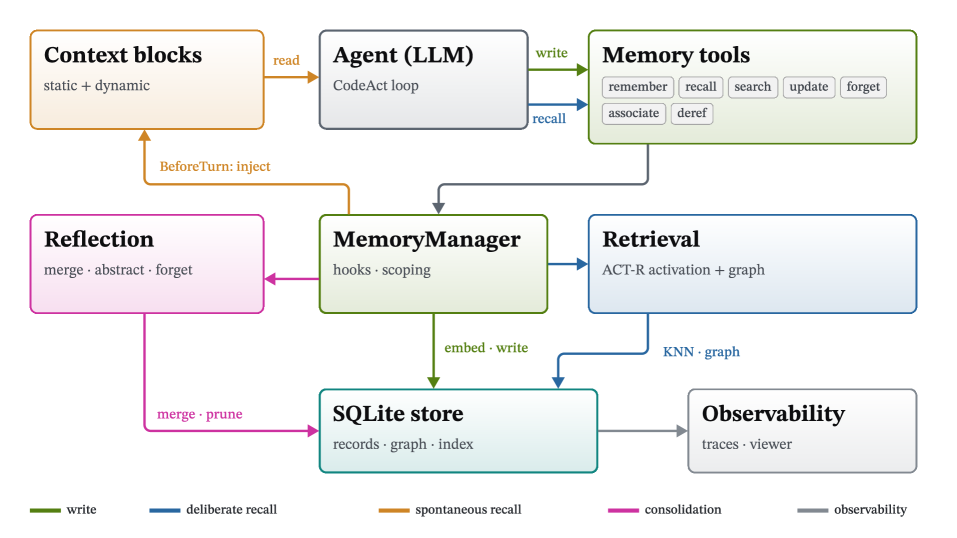
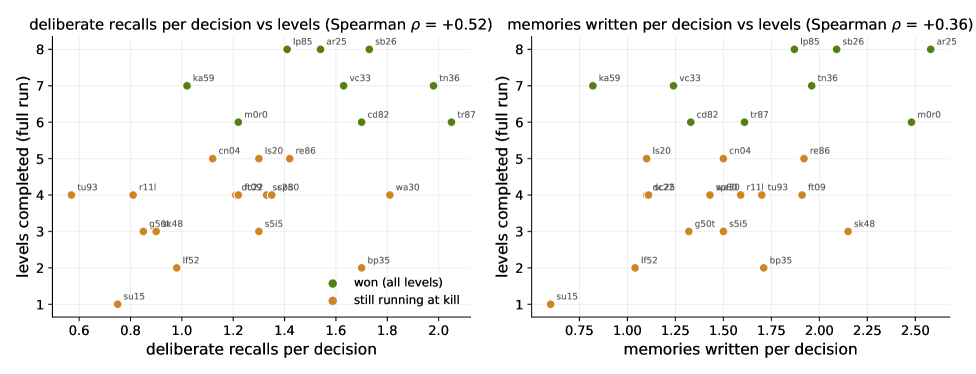
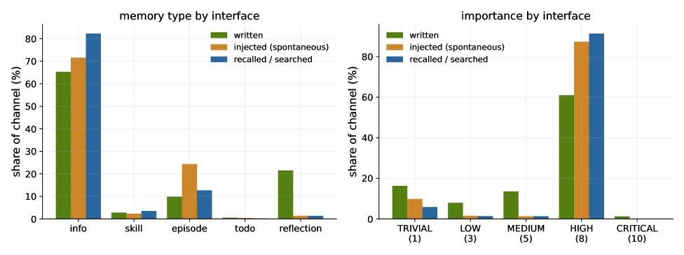
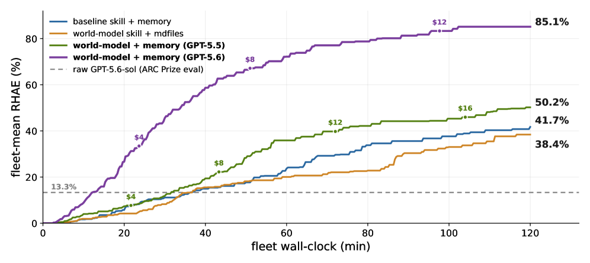

传统Agent开发被拆散在prompt模板、工具schema、回调代码和工作流图里。NVIDIA Object-Oriented Agents（NOOA）提出更简单的做法：Agent就是一个Python对象。 它的方法就是模型能执行的动作，字段就是它的状态，docstring就是prompt，类型注解就是契约。方法体是 `...` 的在运行时由LLM驱动的agent loop补全，方法体正常的方法就是标准确定性Python。开发者和Agent用同一个接口，所以agent行为可以像其他软件一样被测试、追踪、重构、改进。
随着对AI agent兴趣的增长，agent开发工具包爆发式涌现，每个都有自己的开发者侧和模型侧抽象。这些系统暴露了实用的原语：工具、记忆、工作流、交接、追踪、代码执行：但往往把agent源码拆散在prompt模板、schema、回调、配置文件、编排代码里。因此学一个新agent框架，常常意味着为那些在普通编程语言里已有成熟对等物的能力（类型化接口、变量作用域、控制流、异步执行、对象状态）再学一套新编程模型。这些抽象不但对开发者熟悉，也广泛出现在模型训练数据里。
NOOA受PyTorch启发：PyTorch证明了强大的运行时也能给用户呈现简单的Python编程模型。NOOA把同一概念用到agent上：Python已有正确抽象的地方，NOOA就直接用。Agent动作、辅助逻辑、harness扩展点都是普通Python程序，对开发者熟悉、贴近LLM训练过的代码分布、因此编码agent能直接理解。对于agent特有、在标准Python没有对应物的概念（context构造、事件历史、模型可见状态），NOOA用简单Pythonic API暴露。这带来双重好处：消除人类学习曲线，同时保证agent即时就绪。
论文的三项贡献：① 提出「agent-as-a-Python-object」编程模型与设计原则；② 识别出六个模型侧能力（NOOA是首个把它们组合到同一界面的）：类型化I/O、live对象上的传引用、代码即动作、可编程loop工程、显式对象状态、模型可调用的context/events harness API；③ 证明当前模型能有效使用这个界面：针对性能力测试 + SWE-bench Verified + Terminal-Bench 2.0，并在ARC-AGI-3交互推理基准上把多agent世界模型系统压进单个agent + 一页skill，同时推进分数-成本帕累托前沿。

P1. 复用Python抽象：已有成熟Python抽象就直接采用，而非引入DSL。类定义agent、方法定义能力、字段持有显式模型可见的持久状态、类型注解定义契约、asyncio表达并发、异常传达失败、控制流是普通Python：开发者与agent都可用。
P2. 把agentic loop重构成方法调用：应用层看到一个agentic loop，就是一次带类型化输入/输出的普通Python方法调用，而非无结构的文本交换。参数以live Python对象的引用方式传入，harness渲染有界的预览和context、把参数和对象状态注入loop，并在返回给调用者前校验返回值。
P3. 把确定性工作移出agentic loop：LLM擅长语义判断、综合、开放式任务；精确规则、算术、解析、状态转移应放进确定性方法。这个边界在代码里局部可见：真实方法体做确定性工作，省略号（`...`）方法体做agentic loop。

P4. 解锁模型已有的Python知识：LLM已经会写Python、会用流行的Python库。让模型写普通Python而非工具调用，NOOA利用了这份知识。CodeAct代码可以用普通循环与条件、asyncio并发、数据库客户端查询、绘图库可视化、普通import扩展：无需定制prompt、读文档或学新DSL。这让NOOA异常易用，同时最大化agent就绪度。
P5. 把harness暴露为显式API：agent特有的概念：结构化context、context渲染、事件历史：作为Python API暴露给开发者和模型。接口尽量镜像内置类型或现有库，使其熟悉且显然。Agent能访问自己的context，并通过Pythonic原语管理它。
完整Agent就是一个Python类：同时是源码、prompt表面、类型契约、工具接口、状态边界。方法体含 `...` 的成为agentic方法（harness以LLM驱动的loop运行它）；普通方法体是按原样执行的确定性Python。
NOOA agent是暴露模型可调用行为的Python对象，通过类型化方法、字段、docstring。开发者也用普通Python写它。运行时harness直接执行普通方法，把省略号方法体实现为LLM loop。NOOA通过strategies实现agentic方法：strategy以装饰器声明，保留方法普通Python签名与类型化边界，但控制其agentic执行：渲染什么context、如何执行轮次、如何校验候选输出。strategy是逐方法的，也是扩展点。
内置两个strategy：Predict是单次strategy，适合分类或提取：渲染context、让模型给一个值、按Python返回类型校验输出，失败时跑本地重试loop。CodeAct把同一契约推广为迭代式Python REPL：模型可调用 `execute_python(...)` 计算、检查内部agent状态、调用辅助函数或其它生成方法；harness记录观测、重渲染更新后的状态、重复，直到模型以类型校验通过的值调用 `return_result(...)`。同一个agent可混合两种strategy，按任务给每个方法选合适的执行模式。
方法声明规定了loop：签名给模型结构化输入与输出校验契约、docstring成为prompt、self上的方法和导入的库成为可调用工具。输入不限于文本：例如triage收到一张图片和一个live Order对象，按引用而非序列化进prompt传入。这把prompt工程拉回软件工程：行为可被测试、追踪、重构、版本化、优化。

模型调用agentic方法时同agent内串行化，独立调用不交错轮次；嵌套同agent调用遵循栈纪律（调用者暂停直到被调者返回，两者追加到同一事件历史）；其它方法和其他agent在Python标准async/await并发模型下并行。
能力测试在440条记录（88测试 × 5次）上评估每个模型。 整体通过率97.9%（4309/4400）。GPT-5.5 100%、Gemini 3.5 Flash 99.8%、GLM-5.2 99.8%、Claude Opus 4.8 99.5%、Gemini 3.1 Pro 99.5%、Nemotron 3 Ultra 98.6%、Kimi K2.6 98.0%、Claude Haiku 4.5 97.7%、GPT-5.4 Mini 94.8%、Nemotron 3 Nano 30B 91.6%。
重要含义：接口本身对当代LLM不是负担。 模型懂Python：能读对象文档、用类型化参数调用方法、用返回值、修改对象状态、返回满足类型契约的值。这种零样本流畅性验证了框架的经验agent就绪度：通过把agentic结构表达为原生软件抽象，彻底移除了其它框架引入的接口摩擦。
压力测试暴露剩余前沿：残余失败集中在六个stress族（最像agentic工作的测试，而非单次工具调用）：大批量中逐项簿记、从噪音中恢复等。这些缺口正是后续要对付的方向。
SWE-bench Verified通过率（发布时leaderboard SOTA为专用agent + Opus 4.5的79.2%）。NOOA在GPT-5.5 xhigh下达82.2%（off 67.2 / high 78.8），在Opus 4.6下达79.8%（off 76.8 / high 79.8）；对比OpenCode 1.14.33最高78.6%、PI v0.72.1最高78.2%。NOOA多个配置超过发布时SOTA。
Terminal-Bench 2.0（89任务，任务通过率 %）（发布时SOTA为NexAU-AHE + GPT-5.5的84.7%）。NOOA在GPT-5.5 high/xhigh下达73.0%（off 46.1），Opus 4.6达65.2%（off 64.0）；对比OpenCode最高60.7%、PI最高75.3%。NOOA的整体得分-成本曲线落在前沿。
CyberGym L1漏洞发现：在安全基准上，agent必须检查代码库、识别安全相关bug、产出一致触发它的PoC来验证。Agentic漏洞发现出了名的难、极耗context：崩溃报告很长。NOOA在此展现把长期上下文交给记忆子系统处理的价值。

ARC-AGI-3交互推理基准上，NOOA界面把多agent世界模型系统压缩进单个agent + 一页skill，同时推进分数-成本帕累托前沿。在两小时舰队预算下（每舰队25个游戏、每游戏一个NOOA agent），世界模型skill配记忆子系统在GPT-5.5上达到舰队平均RHAE 50.2%。
这篇论文对比了DreamTeam多agent系统与NOOA单agent世界模型示例的方法论（Table 9），记录了从DreamTeam到单agent + 一页skill的转变、包含/红队审计、世界模型使用证据与失败模式，以及play中的记忆系统使用。记忆子系统设计被详细剖析（Figure 5/8/9）：MemoryManager.install把记忆挂到未修改的agent上，agent通过七种工具自建存储并主动检索，每个决策的记忆参与（写入与主动检索频次）与性能相关。
框架与harness对比：调研十四个agent框架和harness，发现社区正广泛朝着这些能力收敛：往往是实验性或部分特性。NOOA把它们整合到同一接口上，论文给出对比以促进进一步采纳。
参考：https://arxiv.org/html/2607.20709v1